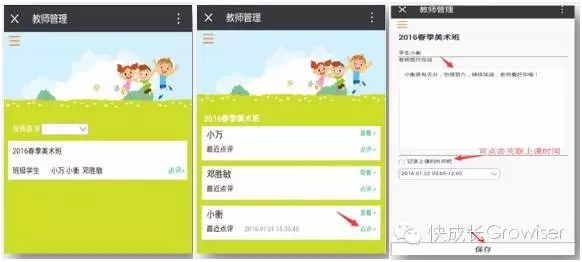
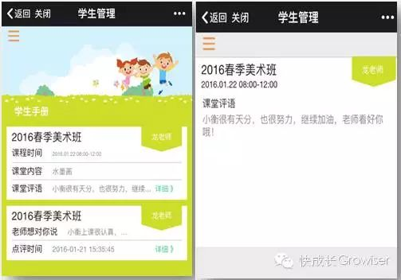
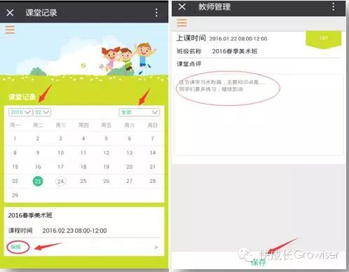
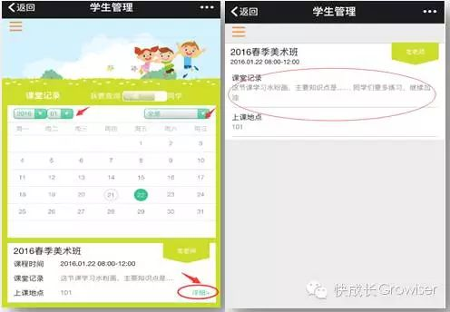

相信很多老师与学生家长之间的沟通或多或少都会存在一些问题。
比如由于学生较多，老师没有足够的时间与每一位家长保持沟通；又或者有的学生通常由爷爷奶奶接送上下学，老师少有跟家长正面接触的机会，通过学生的爷爷奶奶将老师的反馈传达给家长，效果也往往不如老师与家长直接交流来的好。
这就造成了家长们很多时候不清楚孩子在学校上课的内容进度、不了解孩子在学校的课堂表现以及老师对孩子的评价。
对于老师来说，每个孩子在学校的成长都值得与家长分享。虽然曾经的班级微信群、QQ群给家长与老师之间提供了交流的平台，但是随着时间的演变，群交流带来的却往往是过度沟通和信息超载。老师无法向每一位家长有效反馈孩子的在校情况，而过度的沟通甚至干扰了老师和家长们工作以外的生活，这就成了家校互动之间的棘手问题。
于是，为了给老师和家长们搭建一个更有效的信息反馈平台，快成长的“学生手册”和“课堂记录”功能就华丽登场啦！
“学生手册”是老师对学生的点评，老师可以通过学生手册反馈学生的课堂表现，学习建议等。这是老师与学生之间一对一的“悄悄话”，只有老师和对应的学生及其家长能查看，别人无法看到，这就保护的学生与家长的隐私，避免不必要的尴尬。
“课堂记录”是老师对整个班级的课堂内容的记录，老师记录下本节课上课的知识点，方便学生和家长了解课程进度和回顾课堂内容，也可以写下对孩子们上课的评价、寄语等等。
运用“学生手册”和“课堂记录”的功能，能够使家长更好的了解孩子的学习情况，增强家长对老师教学水平和成果的感知度，并且有助于老师和学校良好口碑的树立和传播，具有着长远的意义。
需要说明的是，“学生手册”和“课堂记录”这两个功能点的初衷是为了给老师的管理工作提供更便捷途径和方式，而绝对不是为了增加老师的工作量。
若老师没有充足的时间，则不需要每一节课对每一位学生都编写学生手册。老师可以选择性的对某几位特别需要向家长反馈评价，或提出建议的学生进行点评。也可以根据实际情况，分阶段的填写学生手册，争取覆盖到每一位学生。
老师也并不一定要对每一天、每一节课都编写课堂记录，可以根据实际情况而定。比如课堂记录，老师根据教学的进度，可选择每周所上课的知识点，或者根据某一段时间下来所教内容的章节、构架来总结性的编写一次课堂记录。这就方便学生和家长掌握课程进度并能够回顾课堂的内容概要。
总之，老师可以根据实际情况灵活运用这两项功能，不但不会增加老师的工作量，反而会使老师的工作更有成效！
“学生手册”和“课堂记录”这两个功能的使用也非常简单：
一、学生手册
1、老师如何编辑学生手册
（1）点击“学生手册”-->“点评”--> 选择要点评的学生。（点击图片可放大查看）
（2）点击右侧对应的“点评”按钮，录入对学生的评价-->点击“保存”，即可完成点评。
（3）若需要删除或修改点评记录，点击“查看”按钮，可查看您对该学生的点评记录，您可删除记录，或者对点评内容进行修改。
2、家长如何查看学生手册
（1）点击“学生手册”-->进入手册记录列表界面-->找到想要查看点评的课堂。
（2）点击“详细”按钮可进入点评的详情页面，可查看老师的课堂评语已经老师想对孩子说的“悄悄话”。
二、课堂记录
1、老师如何编写课堂记录
（1）点击“课堂记录”菜单，从班级列表中找到要进行记录的课堂（可通过下拉框选择时间和班级名称快速查找）。
（2）点击“编辑”-->进入编辑界面，可输入课堂内容、对学生们的点评等，点击“保存”即可。
（3）课堂记录生成后，如需修改，可按照同样的步骤进入编辑界面，修改课堂内容后点击保存即可。
2、家长如何查看课堂记录
（1） 点击“课堂记录”菜单，进入到课堂记录界面-->从班级列表中找到想要查看记录的班级（可通过下拉框选择时间和课程快速查找）。
（2） 点击右侧对应的“详细”按钮，即可进入查看详细课堂记录。
（3） 点击屏幕下方的“上节课”或“下节课”按钮，可转跳到上一节课或者下一节课的课堂记录。
